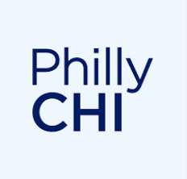
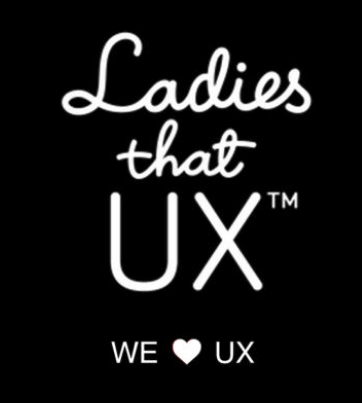

Professional Associations

PhillyCHI
PhillyCHI is the Philadelphia region's branch of the ACM SIGCHI. It serves as a local community for professionals interested in human–computer interaction, user experience, and digital design. They host events, talks, and networking opportunities to help UX practitioners grow their knowledge and network.

Ladies that UX
Ladies that UX is a global community that supports women in UX. The organization provides safe spaces to share experiences, give advice, and create opportunities. The Philly chapter helps connect local UX women through meetups and mentorship programs.